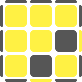
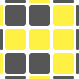
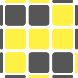
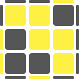

Orientation of the Last Layer по-простому это сборка желтой шапки, шапки на последней стороне. "Шапка" означает, что вся последняя сторона должна собраться, не разрушив при этом собранных двух слоев. Пояс последней стороны нас сейчас не интересует, он будет на следующем шаге. В Fridrich методе желтая шапка решается за один шаг, но количество вариантов тут немаленькое - 57. Так что, если вы начинающий, то вам пока рановато учить OLL. Можно не сразу учить все 57 алгоритмов, а ограничиться пока первыми семью, т.е. сначала делать желтый крест, а потом один из семи вариантов (шапка в 2 этапа).
Для каждого случая может быть более чем один вариант решения, либо не один вариант начального расположения кубика. На всех рисунках изображен вид сверху, т.е. как мы видим желтую сторону сверху. Нижняя часть рисунка соответствует фронтальной стороне, верхняя - задней. Для решения некоторых комбинаций, есть несколько формул, выделена та, которая по нашему мнению наиболее оптимальна.
Крестовые
Эти формулы мы рекомендуем учить в первую очередь, сначала делаем крест, а потом применяем один из семи алгоритмов.
Рыбки
R U R' U R U2' R'
y L' U2 L U L' U L
y' R' U2' R U R' U R
y2 L U L' U L U2 L'
Движение U2 выполняем двумя разными пальцами, можно так же доучить с других сторон.R U2' R' U' R U' R'
y L' U' L U' L' U2 L
y' R' U' R U' R' U2' R
Если вам удобно выполнять левой рукой, то можно зеркалить, формула вторая
Вертолет
R U2' R2' U' R2 U' R2' U2 R
y2 L' U2 L2 U L2' U L2 U2 L'
Очень быстрая формула, старайтесь не делать лишних перехватов.
Глаза
R2 D R' U2' R D' R' U2' R'
y2 R2' D' R U2' R' D R U2' R
Хорошо выучить обе формулы и делать с двух сторон
Двойные глаза
R U2 R' U' R U R' U' R U' R'
y/y' R U R' U R U' R' U R U2' R'
F R U R' U' R U R' U' R U R' U' F'
Третья формула для ленивых, фронт, три пиф-пафа (R U R' U'), фронт обратно. Но первые две быстрее
Уши
Rw U R' U' Rw' F R F'
y2 R' F' Rw U R U' Rw' F
y R U R D R' U' R D' R2'
y R' F' R U R' U' R' F R U R
y' R' U' R' D' R U R' D R2
Напомним Rw это движение правых двух слоев кубика.
Восьмерка
F' Rw U R' U' Rw' F R
R2 D R' U R D' R' U' R'
y R2 D' R U' R' D R U R
y' F R' F' Rw U R U' Rw'
Быстрая формула, старайтесь использовать минимум перехватов
Угловые
Случаи, когда правильно ориентированы угловые элементы, для распознавания очень легкие, достаточно только верхней стороны
Буква "H"
R U R' U' M' U R U' Rw'
y/y' R U R' U' M U R U' R' U' M'
M' - движение среднего слоя кубика против часовой стрелки, выполняется мизинцем или безымянным пальцем
Летающий змей
Rw U R' U' Rw' R U R U' R'
y R' F' Rw U Rw' R U' L' U L
y' Rw' U' R U M' U' R' U R
Очень быстрая формула. Последние три движения в первой формуле просто загоняем пару на место (R U' R')
Снежинка
Rw' R U R U R' U' Rw R' M' U R U' Rw'
Rw U R' U' M2 U R U' R' U' M'
Формулы достаточно похожи, попробуйте обе. Выбирайте ту которая удобнее и быстрее получается
Буквы «Т»
F R U R' U' F'
y R' F' U' F U R'
y2 F' L' U' L U F
y2 Fw U R U' R' Fw'
Очень простая формула и запомнить легко, фронт, пиф-паф (R U R' U'), фронт обратно. Старайтесь последнее движение делать большим пальцем правой рукиR U R' U' R' F R F'
F R U' R' U R U R' F'
R U R' F' U' F R U' R'
y2 L' U' L U Rw U' Rw' F
Делаем пиф-паф (R U R' U')и загоняем пару через фронт
Точечные
Это группа формул в которой нету ориентированных ребер, как правило алгоритмы длинные)
Точки
R U2' R2' F R F' U2' R' F R F'
y R U' R2 D' Rw U' Rw' D R2 U R'
Не забывайте выполнять U2 разными пальцами, пригодится умение загонять пару через фронтRw' U' Rw U2' R' U2' R U2' Rw' U Rw
y2 Rw U Rw' U2' R U2' R' U2' Rw U' Rw'
y F R U R' U' F' Fw R U R' U' Fw'
Старайтесь не делать лишних перехватов.
Запятые
Rw' R2 U R' U Rw U2' Rw' U R' Rw
Rw' R U R' F2 R U L' U L Rw R'
y' Fw R U R' U' Fw' U' F R U R' U' F'
y' Fw R U R' U' Fw' R' F' U' F U R
Rw' R U' Rw U2 Rw' U' R U' R2 Rw
y F U R U' R' F' R' F' U' F U R
y' Fw R U R' U' Dw' x R' F R U R' U' F'
y' R' U2 R' F R F' U' F' U' F U' R
Микки Маусы
Rw' R U R U R' U' Rw R2 F R F'
R' U2 F R U R' U' F2 U2 F R
y2 F R' F' R U R U' R' U' F R U R' U' F'
Rw U R' U R U2 Rw2 U' R U' R' U2 Rw
y R U2 R2 F R F' U2 Rw R' U R U' Rw'
y' F R U' R' U' R U R' F' U' F R U R' U'F'
Диагональ
R U R' U R' F R F' U2' R' F R F'
y2 F R' F' R2 Rw' U R U' R' U' M'
y2 Rw U' Rw' F U2 F U' R U' R' F'
Палки
F U R U' R' U R U' R' F'
y R' U' R' F R F' R U' R' U2 R
y2 Fw R U R' U' R U R' U' Fw'
R' F R U R U' R2 F' R2 U' R' U R U R'
y/y' R U2 R2 U' R U' R' U2 F R F'
Палки
Rw' U' Rw U' R' U R U' R' U R Rw' U Rw
Rw U Rw' U R U' R' U R U' R' Rw U' Rw'
y' R' F' U' F U' R U R' U R
F R U R' U y' R' U' R U' R'
y R U R' U R U' B U' B' R'
y R' U' R U' R' U F' U F R
Буквы Г
Rw U Rw' R U R' U' Rw U' Rw'
y2 x' R U R' Rw U Rw' F' R U' Lw'
y2 R' F R U R' U' F' R U' R' U2 R
y2 Rw' U' Rw R' U' R U Rw' U Rw
Lw' U' Lw L' U' L U R' F R
Буквы Г
y2 F U R U' R2 F' R U R U' R'
Lw U' R' F' R U R' U' F U x
Fw R U R2 U' R' U R U' Fw'
y2 Rw U' Rw' U' Rw U Rw' F' U F
Rw' U Rw U Rw' U' Rw B U' B'
y2 R' F R U R' F' R F U' F'
y2 F' U' Rw' F Rw2 U Rw' U' L' U L
Скобки
R U R2 U' R' F R U R U' F'
R U R' U' y R' F' Rw U Rw' R
R U R' U' x D' R' U R U' D x'
y2 F R U R' U' R' F' Rw U R U' Rw'
y R' U' R' F R F' U R
y R U x' R U' R' U x U' R'
y' L' U' Rw' U L U' F Rw
y' L U Rw U' Rw' F U' L'
Пропеллеры
R' F R U R' U' F' U R
y2 Rw' U Rw U Rw' F' U' F Rw
y2 L' U' L F U F' U' L' U2 L
y2 R U R' F' U' F U R U2 R'
L F' L' U' L U F U' L'
y2 R B' R' U' R U B U' R'
Квадраты
Rw U2 R' U' R U' Rw'
y2 Lw U2 L' U' L U' Lw'
y2 Rw' U2 R U R' U Rw
R' F2 Rw U Rw' F R
Галстуки
y2 R U2' R2 F R F' R U2' R'
y R' U2 Lw R U' R' U Lw' U2 R
y R' U' F R' F' R2 U' R' U2 R
F R U' R' U' R U R' F'
F R' F' R U R U' R'
y' R U R' F' U F R U' R'
Если вы знаете формулу копье, то это как раз ее начало. Формула 2 так же очень быстрая
Буквы М
R U R' U R U' R' U' R' F R F'
y2 R U R' U F' U F U2 R U' R'
y2 R U2 R2 F2 Rw U L' U2 R U'
Начало с рыбки, протолкнули ребро, вернули пару, загнали через фронт
L' U' L U' L' U L U Rw U' Rw' F
y' R U R2' F' U' F U R2 U2' R'
y2 R' U' R U' R' U R U x' R U' R' U x
Тоже самое но левой рукой, но если вы предпочитаете правой, то второй алгоритм
Рюмки
R U R' U' R' F R2 U R' U' F'
y R' U' R U' R' U R' F R F' U R
y F' U' F Rw U' Rw' U Rw U Rw'
Пиф-паф, загоняем через фронт, укорачиваем Тшку
y2 R U R' U R' F R F' R U2' R'
Rw U R' U R U' R' U' Rw' R U R U' R'
y R U R' U F' U F U' R U2 R'
y' Rw R2 U2 R U R' U R U Rw' R
Молнии
Rw U R' U R U2 Rw'
F R' F' R U2 R U2 R'
y2 Lw U L' U L U2 Lw'
Молниеносная формула
R U2 R' U2 R' F R F'
R' F' Rw U' Rw' F2 R
y2 Rw' U' R U' R' U2 Rw
Начало с рыбки,U2, загнали пару через фронт
Молнии
y Rw R2 U' R U' R' U2 R U' Rw' R
y' Rw' R U2 R' U' R U' R' U2 R U M'
y2 F R U R' U' F' U F R U R' U' F'
Первая очень быстрая, четвертая легкая для запоминания
Rw R' U R U R' U R U2 R' U Rw' R
y Rw' R2 U R' U R U2 R' U M'
y' Rw U R' U R' F R F' R U2 Rw'
Мягкие знаки
y R' U' F' U F R
B' U' R' U R B
Fw' L' U' L U Fw
y2 R' U' F R' F' R U R
y2 F U R U' R' F'
Fw R U R' U' Fw'
y F U R' F R F' U' F'
Мягкие знаки
y2 R' U' F U R U' R' F' R
R' F R U R' U' F2 U F R
Rw' F' U F Rw U' Rw' U' Rw
y F R' F' R U R U R' U' R U' R'
Первая очень быстрая, четвертая легкая для запоминания
R U B' U' R' U R B R'
S R U R' U' R' F R Fw'
y R U2 R2 U' F' U F R2 U' R'
Петухи
y2 R U R' U R U2 R' F R U R' U' F'
R U' R' U2 R U B U' B' U' R'
y' R U R' U R U' R' U R U' R' U' R' F R F'
Для легкого запоминания, Рыбка (R U R' U R U2' R') +Тшка
R' U' R U' R' U2 R F R U R' U' F'
y2 R' U R U2 R' U' F' U F U R
Для легкого запоминания, новая Рыбка (R' U' R U' R' U2' R) +Тшка
Петухи
y2 F R' F R2 U' R' U' R U R' F2
Fw R U R2 U' R' U R2 U' R' Fw'
R2' U R' B' R U' R2' U R B R'
y' R' F' Rw U' Rw' F2 R2 U R' U R U2 R'
Старайтесь выполнять все двойные движения двумя разными пальцами
y R U R' U' R U' R' F' U' F R U R'
Rw2 D' Rw U Rw' D Rw2 U' Rw' U' Rw
y R' U2 R2 U R' U' R' U2 F R F'
Начало пиф-паф... и продолжаем
Стелсы
F R U R' U' R U R' U' F'
y2 Fw U R U' R' U R U' R' Fw'
Фронт, два пиф-пафа (R U R' U'), фронт обратно
F' L' U' L U L' U' L U F
y' F U R U' R' F' R U R' U R U2 R'
Если у вас быстро идут формулы левой рукой, тогда первый вариант. Если любите "праворукие" тогда второй
Стелсы
Rw U R' U R U' R' U R U2' Rw'
y' Rw U2 R' U' R U R' U' R U' Rw'
Два слоя от себя, формула, возвращаем
y Rw' U' R U' R' U R U' R' U2 Rw
y2 Rw' U2 R U R' U' R U R' U Rw
y' F R U R' U' R U' R' U R U R' F'
Зеркальная предыдущей, похожее выполнение, только больше через заднюю грань
Стелсы
Rw U' Rw2 U Rw2 U Rw2 U' Rw
y R' U2' R U R' U R F R U R' U' F'
y' F R' F2 R U2 R U2 R' F
Очень быстрая формула
y Rw' U Rw2 U' Rw2 U' Rw2 U Rw'
R U2 R' U' R U' R' F R U R' U' F'
Зеркальная ситуация, выполняется очень похоже

/YXX-XXYYX-XYYYX-XXYYX-YXX.svg)
/XYX-XYXYX-YXYXY-YXXXY-XYX.svg)
/XYX-XYXYX-YXYXY-XXXXX-YYY.svg)
/XYY-XYXXX-XYYYX-YXXYX-XYX.svg)